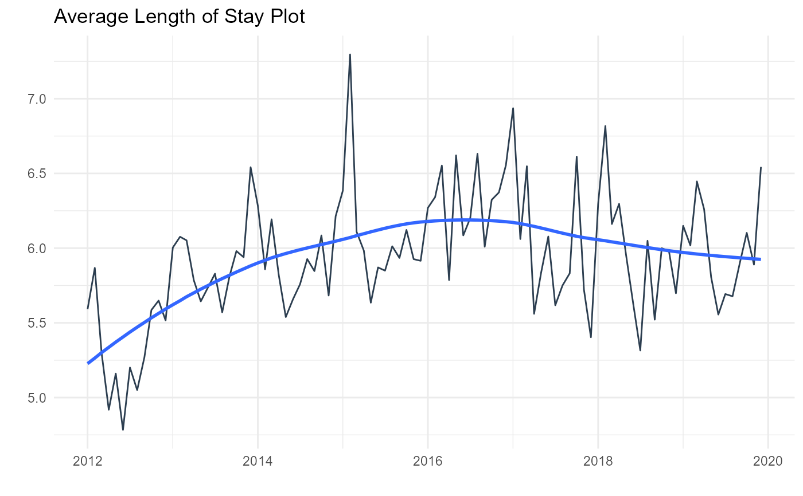

Plot ALOS - Average Length of Stay
ts_alos_plt(.data, .date_col, .value_col, .by_grouping, .interactive)The time series data you need to pass
The date column
The value column
How you want the data summarized - "sec", "min", "hour", "day", "week", "month", "quarter" or "year"
TRUE or FALSE. TRUE returns a plotly plot and FALSE
returns a static ggplot2 plot
A timetk time series plot
Expects a tibble with a date time column and a value column
Uses timetk for underlying sumarization and plot
If .by_grouping is missing it will default to "day"
A static ggplot2 object is return if the .interactive function is FALSE
otherwise a plotly plot is returned.
library(healthyR)
library(healthyR.data)
library(timetk)
library(dplyr)
library(purrr)
# Make A Series of Dates ----
data_tbl <- healthyR_data
df_tbl <- data_tbl %>%
filter(ip_op_flag == "I") %>%
select(visit_end_date_time, length_of_stay) %>%
summarise_by_time(
.date_var = visit_end_date_time
, .by = "day"
, visits = mean(length_of_stay, na.rm = TRUE)
) %>%
filter_by_time(
.date_var = visit_end_date_time
, .start_date = "2012"
, .end_date = "2019"
) %>%
set_names("Date","Values")
ts_alos_plt(
.data = df_tbl
, .date_col = Date
, .value_col = Values
, .by = "month"
, .interactive = FALSE
)
